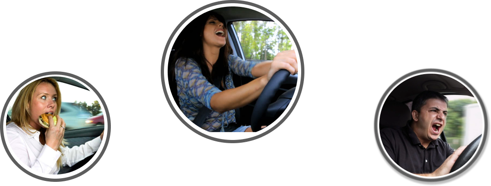
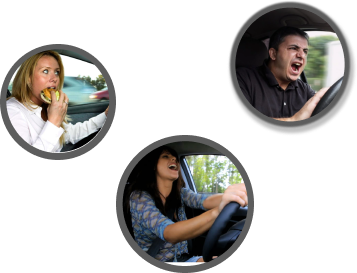

.png)
How can you prevent distracted driving?
Deaths by distracted driving is preventable, here are some ways to protect yourself, and keep yourself safe on the road as well as other drivers and pedestrians.
  NO PHONES
1. Put your phone away: Keep your phone out of reach while driving or turn it off completely to avoid the temptation to use it while on the road.
2. Use voice commands: If you need to use your phone or GPS while driving, use voice commands to make calls, send texts, or get directions.
3. Limit other distractions: Avoid eating, drinking, applying makeup, or other activities that require you to take your hands off the wheel or your eyes off the road.
4. Plan ahead: Make sure you know your route before you start driving so you don't need to use your phone or GPS while on the road.
5. Pull over if necessary: If you need to make a call, send a text, or take care of something else, pull over to a safe location and park your car before doing so.
6. Use passenger help: If you have a passenger in the car, ask them to handle tasks such as making phone calls or sending texts while you focus on driving.
7. Educate yourself: Learn about the dangers of distracted driving and make a conscious effort to avoid any activity that can take your attention away from the road.
By taking these steps, you can help prevent distracted driving and ensure the safety of yourself, your passengers, and others on the road.

NO MULTITASKING
The brain cannot do two things at once, it can only focus on one task. The National Safety Council (NSC) reports that the brain cannot do two things at the same time. When you think you’re effectively multitasking, you’re only focusing at one thing at a time, not both at once. So when you’re driving while eating, drinking, smoking, texting, calling, scrolling through social media, checking email, or putting on makeup. You are taking your eyes off the road.
No Eating
A 2014 Lytx research stated that drivers who eat or drink while on the go are 3.6 times more likely to have a car accident than observant drivers who don’t. According to the National Highway Traffic Safety Administration, eating or drinking from an open container while driving raises the chance of car accidents or near-collisions by around 39%. These statics can seem Disturbing?